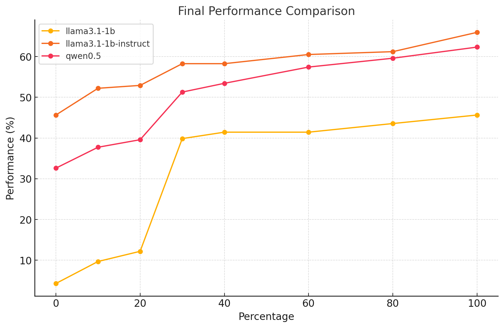

About the Project
Efficient_CoT is a research project focused on developing efficient and structured implementations for chain-of-thought reasoning in AI models. Our work aims to optimize the reasoning process while maintaining high accuracy across multiple benchmarks.
🧠 Focused on Efficiency
Optimized chain-of-thought reasoning with reduced token usage while maintaining performance.
📊 Comprehensive Benchmarking
Evaluation across multiple state-of-the-art models including Qwen, Llama, and DeepSeek.
🛠️ Modular Design
Extensible evaluation pipelines for easy integration with new models and datasets.
Research Methodology
Two-Turn Conversation Evaluation
- First Turn: Prompt the model to "think" and provide a reasoning process along with an answer
- Second Turn: Directly ask the model for the final answer without additional reasoning
Chain-of-Thought Generation
Our CoT generation process utilizes GPT-4o to create detailed and coherent reasoning chains:
gen_cot_template = """
Based on the provided question: {question}, generate a detailed and coherent chain of thought to guide the process of solving this question efficiently and effectively.
Requirements:
1. The chain of thought must focus solely on the reasoning process and step-by-step approach, avoiding any immediate answers.
2. Express the chain of thought as a numbered list using the format:
1. ...
2. ...
3. ...
Return the output in the following JSON format:
```json
{
"chain_of_thought": "..."
}
```
"""
Evaluation Results
GSM8K Benchmark Results
| Model | CoT (Accuracy) | No-CoT (Accuracy) | Difference (CoT - No-CoT) |
|---|---|---|---|
| Qwen2.5-7B-Instruct | 88.93% | 89.16% | -0.23% |
| Qwen2.5-3B-Instruct | 84.38% | 77.18% | +7.20% |
| Qwen2.5-1.5B-Instruct | 83.85% | 72.10% | +11.75% |
| Qwen2.5-0.5B-Instruct | 70.43% | 47.76% | +22.67% |
| Llama-3.1-8B-Instruct | 90.52% | 85.90% | +4.62% |
| Llama-3.2-3B-Instruct | 89.01% | 77.41% | +11.60% |
| Llama-3.2-1B-Instruct | 75.13% | 55.19% | +19.94% |
Multi-Dataset Evaluation
| Task | Evaluator | Model | Accuracy(%) | Response Length (Tokens) |
|---|---|---|---|---|
| GSM8K | Muqi | DeepSeek-R1-Distill-Qwen-7B | 85.65 ± 0.63 | 477.98 ± 0.89 |
| GSM8K | Muqi | Efficient CoT | 82.11 ± 0.48 | 413.42 ± 2.19 |
| GPQA Diamond | Muqi | DeepSeek-R1-Distill-Qwen-7B | 38.72 ± 3.56 | 1975.19 ± 8.90 |
| GPQA Diamond | Muqi | Efficient CoT | 39.23 ± 3.10 | 2006.30 ± 2.23 |
| MATH | Jianshu | DeepSeek-R1-Distill-Qwen-7B | 91.47 | 751.5 |
| MATH | Jianshu | Efficient CoT | 87.45 | 208.33 |
Instruction Decoding Benchmark
Qwen-0.5B GSM8K Evaluation Results
Evaluation on 138 questions with different configurations:
| Configuration | Match Count | Total Count | Accuracy (%) |
|---|---|---|---|
| Baseline (no system prompt) | 38 | 138 | 27.54 |
| Baseline (with system prompt) | 45 | 138 | 32.61 |
| Instruction (no system prompt) | 82 | 138 | 59.42 |
| Instruction (with system prompt) | 86 | 138 | 62.32 |
| Instruction (with system prompt/ simplified) | 68 | 138 | 49.28 |
| Instruction (with system prompt/ hint) | 50 | 138 | 36.24 |
Llama3-1B GSM8K Evaluation Results
| Configuration | Match Count | Total Count | Accuracy (%) |
|---|---|---|---|
| Baseline (with system prompt) | 4 | 138 | 2.90 |
| Instruction (with system prompt) | 63 | 138 | 45.65 |
| Instruction (with system prompt/ simplified) | 55 | 138 | 39.86 |
Performance Analysis
Key Findings
- Efficiency Gains: Our Efficient CoT approach shows significant token reduction while maintaining competitive accuracy
- Model Scaling: Smaller models benefit more from CoT reasoning, with improvements up to 22.67% for Qwen2.5-0.5B
- Consistent Performance: Across multiple datasets, our approach demonstrates robust performance
- Instruction Effectiveness: Proper instruction prompting significantly improves model performance
Compressed CoT Performance
Getting Started
Quick Start
- Clone the repository:
git clone https://github.com/Jianshu1only/Efficient_CoT.git - Install dependencies:
pip install -r requirements.txt - Run evaluation:
python evaluation/evaluation.py --model_path Qwen/Qwen1.5-7B --test_file test.jsonl --eval_mode joint
Benchmark Evaluation
For GSM8K evaluation:
python bench/gsm8k_evaluate_cot.py --model_path your_model_path --test_file gsm8k_cot.jsonl
Ready to Explore Efficient Chain-of-Thought Reasoning?
Join us in advancing the state-of-the-art in AI reasoning efficiency
View on GitHub Report Issues